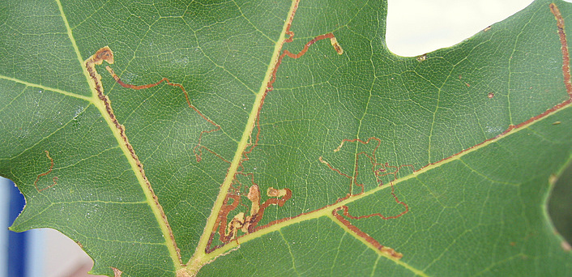
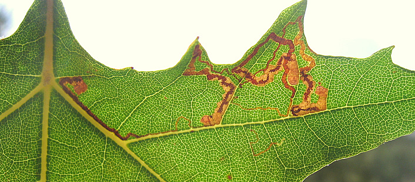

| PHRYGANA | Fauna | Flora |
additions nouveautés |
espèces species |
contact -
info - commentaires phrygana1 (at) gmail.com |
| diversité crétoise -- Cretan diversity | |||||
| Acalyptris platani (Muller- Rutz 1934) |
| 70 | Fauna | NEPTICULIDAE | Nepticulinae | Acalyptris |
 Acalyptris platani feuille minée de Platanus orientalis Agia galini 23 octobre 2007 |
| Adulte: petit papillon avec une envergure de 5 à 5.5 mm, et une couleur de fond brune avec des zones plus claires brun jaunâtre. | |
| La chenille est monophage: Platanus orientalis. | |
| Larve mineuse: l'œuf est généralement pondu près d'une veine sur la face inférieure. La larve creuse une longue galerie, avec des dépôts de "frass" (déchets) soit en forme de 'ressorts', soit en lignes centrales et régulières, occupant parfois toute la largeur de la galerie. A l'état frais, le 'frass' est de couleur vert brunâtre, virant plus tard au brun rougeâtre. Le trou de sortie est sur la face inférieure. | |
| Espèce bivoltine avec des périodes de vol en mai - juin, puis en août - septembre. | |
| Statut en Crète: indigène -- native | |
| Biotopes en Crète: bords de rivière, forêts. | |
| Distribution: Europe méridionale, Moyen-Orient, Iran | |
|
 Acalyptris platani feuille minée de Platanus orientalis Agia galini 23 octobre 2007 |
|
|
| 31 octobre 2010 |
| © paul fontaine -- © Phrygana.eu 2007 -- 2013 |